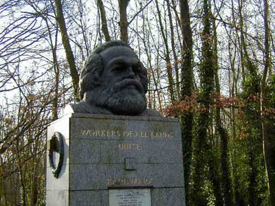

马克思的理论是最彻底的现实批判，在马克思那里，任何现实的范畴都是历史的，最终都要灭亡。而最大的现实范畴又是什么？就是资本主义社会本身！所有历史范畴，在资本主义社会这个历史范畴下，都表现出具体的形态，而所有资本主义的卫道士都会叫嚣，这些范畴是永恒的。
范畴，并不是一个意识制造，而是现实关系的理论反映。范畴是现实的，是活生生的，资本主义社会范畴对应的就是现实的资本主义社会关系的总和。而最大的愚民，就是资本主义的卫道士关于资本主义永恒的叫嚣！但现实的范畴不是叫嚣就能维持的，现实范畴的死亡如同人的死亡一样不可避免！
就像人要企求宗教来逃避现实的死亡，所有资本主义的卫道士都要制造关于资本主义永恒的宗教来企图逃避资本主义死亡的必然性。所有资本主义的卫道士要使得资本主义永恒的神话继续，唯一的途径就是把所有人变成资本主义宗教的忠实信徒。就像那些被邪教教义所洗脑的人，他们可以把自己全部奉献给虚幻的神话，而这也被所有资本主义的卫道士所期盼。
不单单指出资本主义社会范畴所对应的现实关系的具体形态从来都在变动中，马克思更重要在于揭示了：这各种现实关系所对应的现实范畴交织起来的现实逻辑之网也不是永恒不变的，这资本主义的现实逻辑之网也不是先验的，而是历史发展的结果，最终也会在历史的发展中走向灭亡。资本主义的灭亡不是因为资本主义的哪个具体现实范畴的改变而出现的，而是一个总体的现实历史过程，资本主义的灭亡与社会主义的确立，都是一个全球性事件，这是由于资本主义社会范畴所对应的现实逻辑之网的总体性所决定的。
如果用一句话来概括马克思的理论，就是：以历史唯物主义为武器对现实关系构成的逻辑之网进行最彻底的总体剖析、批判、实践、改造！没有批判性的马克思不是马克思，没有现实性的马克思不是马克思，没有总体性的马克思不是马克思，没有历史性的马克思不是马克思，没有彻底性的马克思不是马克思，没有实践性的马克思不是马克思，没有改造性的马克思不是马克思！
马克思就是利剑，划破一切宗教骗子的面具；马克思就是烈马，驰骋一切铁血铸成的历史；马克思就是雷霆，摧毁一切现实永恒的神话；马克思就是火山，喷涌人类思想最炽热的熔岩。那些肆意歪曲、篡改马克思的人，企图把马克思驯化的人，他们歪曲、篡改的谎言或许能编造成历史，但谎言只能是历史的一部分，靠谎言而存在的宗教，就像用干瘪的种子在田地上播种，最终只能收获失望与闹剧！